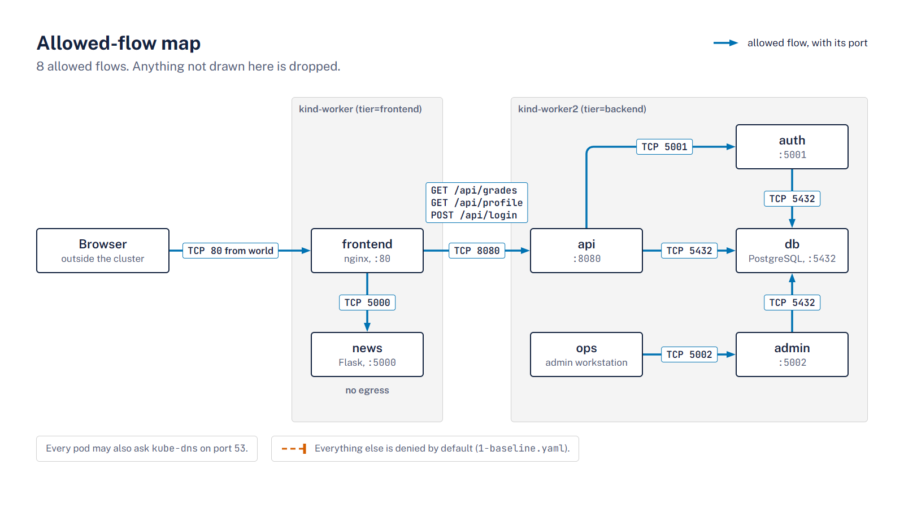
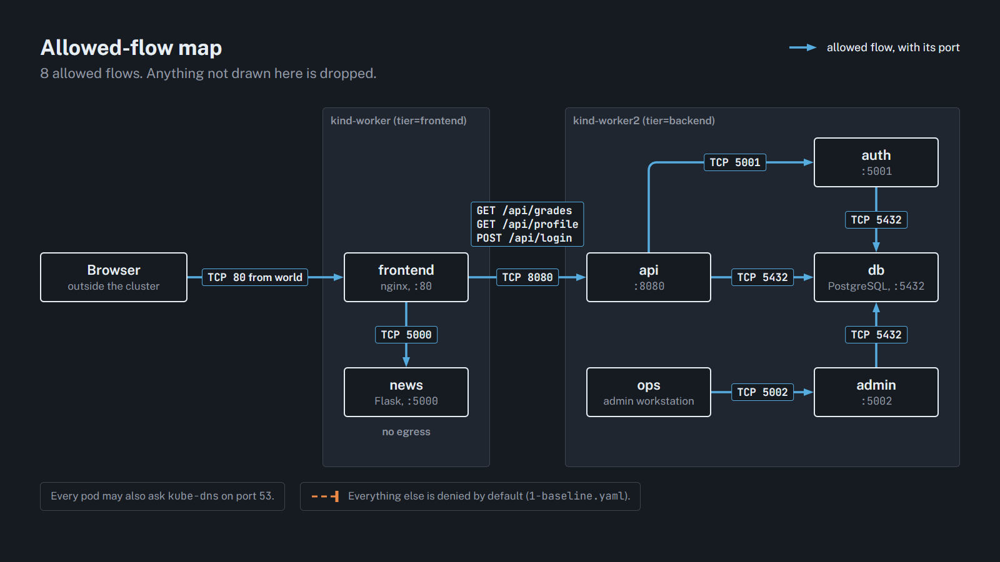
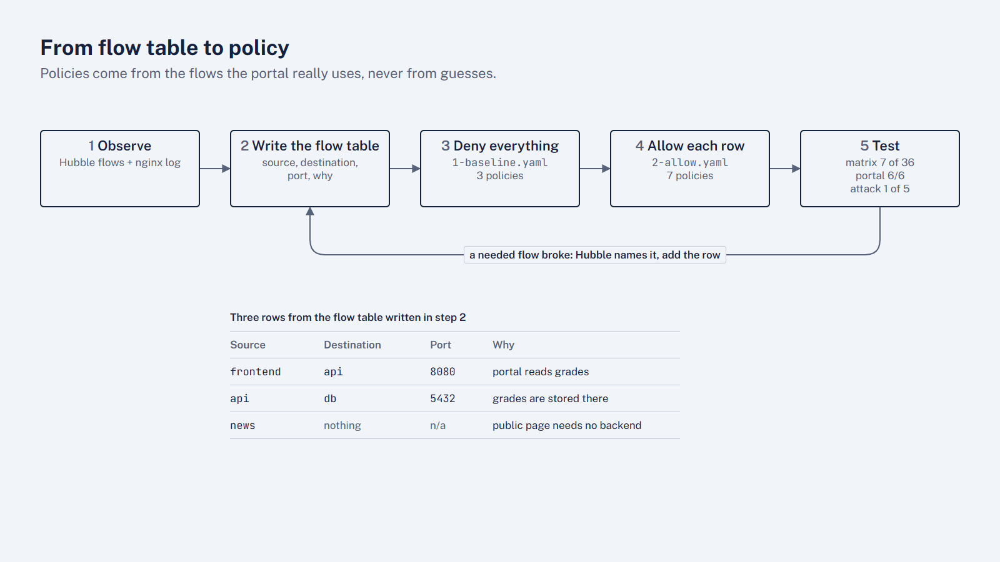
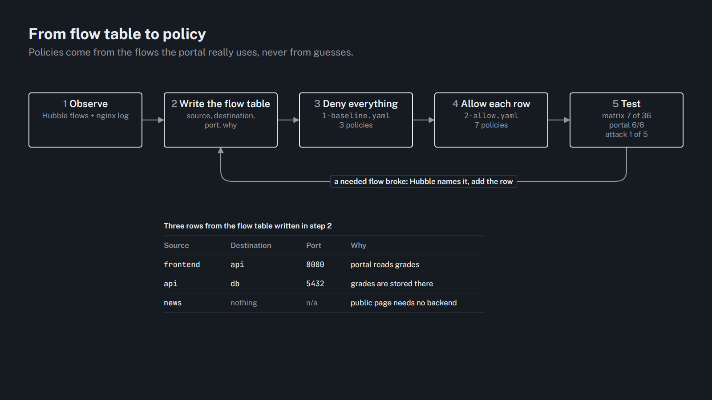

Chapter 9. Design the policy
Before you write a single policy line, you find out exactly which connections the portal needs. You make the portal do its whole job while Hubble records every connection, read the HTTP paths from the frontend's log, and turn both into two tables: a flow table listing the 8 connections that must stay open, and a deny table listing what must stay closed and which attack step each closed path stops. At the end both tables sit in ~/microseg/evidence/, your flow table matches the one in chapter 1, and you know which policy has to carry each permission. Plan on about an hour and a half.
Is the lab flat, and is Hubble connected?
The flows only describe the portal if the network is still flat and Hubble's command-line tool can reach Hubble Relay. Chapter 4 started that link with cilium hubble port-forward &, and a reboot ends it.
kubectl -n campus get ciliumnetworkpolicies
hubble statusThe first command must find no policies. hubble status asks Hubble Relay, through the port-forward on port 4245, how many nodes it's collecting flows from.
You should see no policies and a healthy Hubble.
The first line must read No resources found in campus namespace. In the hubble status part, the line that matters is Connected Nodes: 3/3. The flow counts on the other lines change every second.
If you see this instead
A long error from hubble status that contains this text:
4245: connect: connection refusedThe rest of the message differs between runs. Port 4245 is where the port-forward listens, and "connection refused" means nothing is listening there, so the port-forward isn't running. A reboot or a closed Ubuntu window ends it. Start it again in the background, wait five seconds and repeat the check.
cilium hubble port-forward &
sleep 5
hubble statusThe & at the end of the first line runs the port-forward in the background, so you get the prompt back while it keeps working. It stops when you close this Ubuntu window. The output looks like the one in chapter 4. A line such as [1] 2817 comes first, which is bash giving the background command a job number and a process number, and yours will differ. Then hubble status must show Connected Nodes: 3/3. The port-forward may print messages of its own on top of your prompt, now or later. If text appears and no prompt follows it, press Enter to get a clean prompt.
An error from the port-forward containing this text:
bind: address already in useA port-forward is already running in another Ubuntu window, but hubble status still can't reach it. Close every Ubuntu window except the one running the dashboard. Open a new Ubuntu window and run the three lines above in it. If hubble status still fails, run cilium status and check that Hubble Relay says OK. If it doesn't, go back to the end of chapter 4.
If the policy check lists names instead of No resources found, you applied policies ahead of time. Remove them with kubectl delete -f ~/microseg/k8s/policies/ and run both checks again.
Make the portal do its whole job, twice
check-portal.sh from chapter 6 does everything a normal user and the IT team do: it loads the page, reads the news, logs in as Sara, reads her profile and grades, and opens the admin panel from ops. Running it is the most reliable way to produce every legitimate connection on demand.
Leave the dashboard alone during this chapter. Its matrix probes and its attack button open connections from every pod to every service, and those would land in your evidence as if the portal needed them. Don't reload its page either, because opening the page runs the matrix once. The checkpoint at the end of chapter 8 called the matrix too, from the terminal. If you clicked anything in the dashboard, reloaded it, or ran any curl to localhost:5050 in the last three minutes, wait three minutes first. Then run the check twice.
bash ~/microseg/check-portal.sh
bash ~/microseg/check-portal.shTwo runs give each connection at least two records, so you can tell traffic the portal repeats every time from a stray one-off.
You should see two runs of six checks.
Both runs must end with PORTAL: 6/6 OK.
If you see this instead
FAIL portal page loads (expected '200', got '000')The portal isn't answering on port 30080. Go back to the first step of chapter 8, which shows how to bring the lab back after a reboot.
A different single check fails, for example FAIL ops can open the admin panel (expected '4', got ''). One service is down. Run kubectl -n campus get pods, find the pod that isn't 1/1 Running, and use the failure blocks of chapter 6 to fix it.
Read who connected to whom, in Hubble
Now ask Hubble which connections those two runs opened. The command reaches three minutes back, so run it within three minutes of the portal check.
hubble observe --namespace campus --since 3m --protocol tcp | grep "TCP Flags: SYN)" | grep -v "(host)" | tee ~/microseg/evidence/ch11-flows.txthubble observe prints recorded flows. --namespace campus keeps the flows that start or end in your namespace. --since 3m keeps the last three minutes. --protocol tcp keeps TCP traffic and drops name lookups, which use UDP.
The first grep keeps lines that contain TCP Flags: SYN). Every TCP connection starts with a SYN packet, the "may I connect?" knock, so this filter keeps the start of each connection and drops the rest of its packets. The closing bracket in the pattern does real work. The answering packet is marked SYN, ACK, and the bracket leaves those replies out. The second grep -v "(host)" removes lines whose source is the node itself. Those are the kubelet's readiness probes, which check every few seconds that each pod is healthy, and they aren't part of the portal. tee shows the result and saves it in evidence/ch11-flows.txt.
You should see a list of lines, each showing one connection that opened.
Your timestamps, pod-name endings, port numbers on the left side and ID: numbers will all differ. Here is one line from the validation run of this lab, recorded a little later with the policies on. Lines from your flat network have the same format.
Nov 19 20:43:45.283: campus/api-65c5c7d5fd-2qtsk:55286 (ID:6935) -> campus/db-887596757-wzmtj:5432 (ID:13907) to-endpoint FORWARDED (TCP Flags: SYN)Read it from left to right. After the time comes the source, the pod campus/api-..., using a random port, 55286, on its own side. The ID: number is the source's security identity. The arrow -> points to the destination, the db pod on port 5432 with its own identity. to-endpoint FORWARDED says Cilium delivered the packet to the destination pod. The service name is the part of the pod name between campus/ and the first dash.
Go through your saved lines with a pen and write down each different combination of source, destination and destination port. Ignore repeats. A connection between pods on two different nodes may show up on two lines, once as it leaves one node and once as it arrives at the other, and both count as one connection. The line written as it leaves says something other than to-endpoint before FORWARDED, such as to-overlay. One source has no pod name. It's an IP address followed by (world), which is Cilium's name for anything outside the cluster. That's your own curl from Ubuntu coming in through port 30080, and every visitor's browser would look the same.
You should end up with exactly eight different combinations.
If you see this instead
Many lines end in (TCP Flags: SYN, ACK), and each connection seems to appear in both directions. The closing bracket is missing from the first grep pattern, so the answering packets got through the filter. Run the command again with the pattern typed as "TCP Flags: SYN)", bracket included.
The list shows connections from news, or from db, or pairs such as frontend to auth. The dashboard's matrix or attack button ran within the last three minutes and its probes got mixed in. Wait three minutes without touching the dashboard, run check-portal.sh twice again, then run the hubble observe command again.
The list is empty. More than three minutes passed between the portal check and hubble observe, or the port-forward stopped. Run hubble status, then the portal check and hubble observe again, one right after the other.
Read the HTTP paths in nginx's log
Hubble showed that frontend connects to api on port 8080, but not which requests travel over that connection. On a flat network Cilium never looks inside HTTP. Its HTTP proxy, Envoy, only sees a request when an L7 rule sends the request through it, and you have no rules yet. The frontend's access log fills the gap. An access log is the file in which a web server writes one line for every request it handles.
kubectl -n campus logs deploy/frontend --since=15m | grep -v healthz | tee ~/microseg/evidence/ch11-nginx-log.txtkubectl -n campus logs deploy/frontend prints what the frontend pod has written, and the nginx image sends its access log there. --since=15m keeps the last fifteen minutes, which leaves you time to read the Hubble lines first. grep -v healthz hides the readiness probe requests to /healthz, which arrive every few seconds. tee saves a copy in evidence/.
You should see one line per request that check-portal.sh sent through frontend.
The part in double quotes on each line is the method, the path and the HTTP version, for example "POST /api/login HTTP/1.1", and the number after it is the status code, which must be 200. Find these five requests, each at least twice: GET /, GET /news, POST /api/login, GET /api/profile and GET /api/grades. The admin panel check never appears here, because ops talks to admin directly without going through frontend.
The log is also useful for what it leaves out. /api/export never appears, because nothing the portal page does calls it.
If you see this instead
The output is empty, or shows each request only once. More than fifteen minutes passed since the portal check. Run bash ~/microseg/check-portal.sh twice and then this command again.
Lines with /news/check-image appear. Those are attack requests from chapter 8 or from the dashboard's attack button, still inside the fifteen-minute window. The image checker is a feature the portal offers, so an HTTP rule can't block these requests without breaking it. Containing that bug is segmentation's job. Ignore these lines for the flow table, and any other line whose path isn't one of the five above.
Write the flow table (what stays open)
The flow table is the list of connections the portal is allowed to make, one row each, with the reason. It's the design your policies in chapter 10 put into code, and it goes into the design chapter of your thesis.
Create the file in VS Code.
code ~/microseg/evidence/flow-table.mdYou should see VS Code open an empty file named flow-table.md. It opens as a new tab in your project window, or in a new VS Code window if that one is closed. Nothing prints in the terminal, and the prompt comes back at once.
Type the header line, the separator line and the first row exactly as shown here. The first row is the connection from the outside world.
| Source | Destination | Port | L7 detail | Why it's needed |
|---|---|---|---|---|
| world | frontend | 80 | none | students and visitors open the portal through NodePort 30080 |Then add one row for each of the other seven combinations you found in Hubble. Write service names in lower case, as Kubernetes spells them, and start every row with | followed by the source name. Write the port as a plain number. The checkpoint reads the rows that way.
Fill in the L7 detail column for one row only, frontend to api, with the three requests you found in the nginx log: GET /api/grades, GET /api/profile, POST /api/login. Write none everywhere else. Frontend to api is the one connection where a caller you have to trust can also send a request you don't want, since the same connection that carries a login could carry /api/export. Frontend to news gets no L7 detail. Both of its paths, the news list and the image checker, are features the portal offers, so an HTTP rule there would remove nothing. The connections to db aren't HTTP at all, since PostgreSQL speaks its own protocol.
In the last column, write in a few words what breaks if that row is missing. Save the file with Ctrl+S.
If you see this instead
code: command not foundClose every Ubuntu window and open Ubuntu again, which reloads the path set up by VS Code's WSL extension. If it still fails, go back to the VS Code part of chapter 2.
You found more or fewer than eight combinations. Don't fill in the table from chapter 1 to make the numbers agree. Go back to the Hubble step, read its failure block, and collect the flows again. A missing connection here becomes a broken portal in chapter 10.



Figure 4 draws your eight rows as arrows between the services. No arrow leaves news or db, and ops is the only service with an arrow into admin.
Write the deny table (what stays closed)
The deny table is the other half of the design: what stays closed, and why. Default deny closes these paths without any rule naming them, so they don't appear in any policy file. This table writes them down, with each row tied to the attack step it stops.
Create a second file.
code ~/microseg/evidence/deny-table.mdYou should see VS Code open a second empty file, deny-table.md, in the same window as the first. As before, the terminal prints nothing.
Type this table into it, and read each row as you type it. Every row follows from your flow table: whatever no row allows is denied.
| Source | Destination | Why it stays closed | What it stops |
|---|---|---|---|
| news | anything except DNS | news serves announcements and calls no other service | attack steps 2, 3, 4 and 5 |
| db | anything | a database answers queries and never starts a connection | a break-in at db reaching other services |
| frontend | auth, db, admin | frontend only passes requests to api and news | a break-in at frontend going around api |
| every pod except ops | admin | only the IT helper needs the admin panel | attack step 5 |
| every pod | the internet | no service downloads anything while it runs | fetching attack tools (T1105) and sending data out |
| frontend | api paths other than the three in the flow table | /api/export is a forgotten debug route | the grade export from chapter 10 |Save it with Ctrl+S.
If you see this instead
The table shows up as one long line when you open it later. You typed it in a program that saved Windows line endings or wrapped the lines. Open it in VS Code, check that the status bar at the bottom right shows LF, and put each row on its own line.
Two permissions per connection: exit visa and entry visa
Default deny, which you write in chapter 10, applies in both directions on every pod in campus. A pod may not send a connection out unless its egress rules allow it, and it may not accept a connection in unless its ingress rules allow it. So each row of your flow table needs two permissions, one at each end.
Think of a trip abroad. You need an exit visa from the country you leave and an entry visa from the country you enter, and either one alone gets you nowhere. For frontend to reach api on port 8080, frontend's policy has to grant the exit visa, an egress rule toward api on 8080. Api's policy has to grant the entry visa, an ingress rule from frontend on 8080. If either is missing, Cilium drops the connection and the caller waits until it gives up.
The world row is the one exception. The outside world isn't a pod and has no policy of its own, so frontend's entry visa for world is all it needs. That makes 8 entry visas and 7 exit visas for your 8 rows.
Sorting your flow table by workload gives the plan for chapter 10, with one policy per workload. Chapter 10 sends you back to this table. Check that each row of your flow table appears exactly twice in this plan, once in the source's egress column and once in the destination's ingress column, except the world row, which appears once.
| Workload | Ingress, who may connect to it | Egress, what it may connect to |
|---|---|---|
| frontend | world on 80 | api on 8080, news on 5000 |
| news | frontend on 5000 | nothing |
| api | frontend on 8080, three HTTP requests only | auth on 5001, db on 5432 |
| auth | api on 5001 | db on 5432 |
| db | api, auth and admin on 5432 | nothing |
| admin | ops on 5002 | db on 5432 |
| ops | nobody | admin on 5002 |
Every pod also keeps one more exit visa, to kube-dns on port 53, so service names still turn into addresses. That rule covers every pod at once, and you'll write it in the baseline file.



Figure 7 follows one row of the flow table as it becomes two rules. The egress half goes in the caller's policy and the ingress half in the callee's.
Checkpoint
Pull the source, destination and port out of every row of your flow table and sort them, so you can compare them with the answer key letter for letter.
grep "^| [a-z]" ~/microseg/evidence/flow-table.md | cut -d "|" -f 2-4 | tr -d " " | sortThe pattern ^| [a-z] keeps lines that start with | followed by a lower-case letter, which are your data rows. The header row starts with a capital S and the separator row has no space after its first |, so neither gets through. cut -d "|" -f 2-4 splits each row at every | and keeps pieces 2 to 4, which are the source, the destination and the port. Piece 1 is the empty text before the first |. tr -d " " deletes every space, so extra spaces you typed for neat columns don't matter. sort puts the lines in alphabetical order, so the order of your rows doesn't matter either.
Checkpoint. The output must be exactly the eight lines below.
They're chapter 1's 8 allowed flows, written in the same short form and sorted.
admin|db|5432
api|auth|5001
api|db|5432
auth|db|5432
frontend|api|8080
frontend|news|5000
ops|admin|5002
world|frontend|80If a line is missing, extra or different, fix that row in flow-table.md only after you've found the matching connection in your Hubble lines. A row you can't find in Hubble points to a mistake in your evidence, so go back to the Hubble step and collect the flows again.
Save your work.
cd ~/microseg && git add -A && git commit -m "ch09: flow table and deny table"This commits the two tables and the two evidence files from Hubble and nginx.